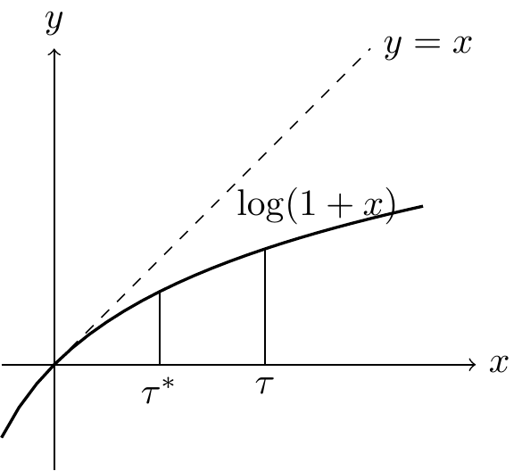

6 Maximum Likelihood Estimation and Likelihood Theory
6.1 Definitions
Likelihood Function Let \(f(x|\theta)\) be the probability density function (or mass function). The likelihood function is: \[ L(\theta; x) = f(x|\theta) \]
Log-likelihood \[ l(\theta; x) = \log L(\theta; x) = \log f(x|\theta) \]
Score Function The score function is the derivative of the log-likelihood with respect to the parameter \(\theta\): \[ S(\theta; x) = \frac{\partial}{\partial \theta} l(\theta; x) = \frac{\partial}{\partial \theta} \log L(\theta; x) \]
Maximum Likelihood Estimator (MLE) The MLE is the value that maximizes the likelihood function: \[ \hat{\theta}_{\text{MLE}}(x) = \operatorname{\text{argmax}}_{\theta} L(\theta; x) = \operatorname{\text{argmax}}_{\theta} l(\theta; x) \] An approach to finding \(\hat{\theta}\) is to solve the score equation: \[ \forall_{\theta}, \quad S(\theta; x) = 0 \]
Example 6.1 (Uniform Distribution MLE) Let \(X_1, \dots, X_n \overset{iid}{\sim} \operatorname{\text{Unif}}(0, \theta)\).
The likelihood function is: \[ L(\theta; x) = \prod_{i=1}^{n} f(x_i | \theta) = \frac{1}{\theta^n} I(X_{(n)} < \theta) \] where \(X_{(n)} = \max\{X_1, \dots, X_n\}\).
To maximize this function, we observe that \(L(\theta)\) decreases as \(\theta\) increases, but \(\theta\) must be at least \(X_{(n)}\). Therefore: \[ \hat{\theta}_{\text{MLE}}(x) = X_{(n)} \]
Properties of this estimator: The CDF of \(X_{(n)}\) is: \[ P(X_{(n)} \le x) = [P(X_1 \le x)]^n = \left(\frac{x}{\theta}\right)^n \quad \text{for } 0 < x < \theta \] The PDF is \(f_{X_{(n)}}(x) = n \left(\frac{x}{\theta}\right)^{n-1} \frac{1}{\theta}\).
The expected value is: \[ E(X_{(n)}) = \int_{0}^{\theta} x \cdot \frac{n x^{n-1}}{\theta^n} dx = \frac{n}{\theta^n} \int_{0}^{\theta} x^n dx = \frac{n}{\theta^n} \left[ \frac{x^{n+1}}{n+1} \right]_0^{\theta} = \frac{n}{n+1}\theta < \theta \] Thus, it is a biased estimator.
Example 6.2 (Normal Distribution MLE) Let \(X_1, \dots, X_n \overset{iid}{\sim} N(\mu, \sigma^2)\). Let \(\theta = (\mu, \sigma^2)\).
The likelihood is: \[ L(\theta; x) = (2\pi\sigma^2)^{-n/2} \exp\left( -\frac{\sum(x_i - \mu)^2}{2\sigma^2} \right) \] The log-likelihood is: \[ l(\theta; x) = -\frac{n}{2} \log(2\pi\sigma^2) - \frac{\sum(x_i - \mu)^2}{2\sigma^2} \]
Score Functions:
With respect to \(\mu\): \[ \frac{\partial l}{\partial \mu} = \frac{2\sum(x_i - \mu)}{2\sigma^2} = \frac{\sum(x_i - \mu)}{\sigma^2} = 0 \implies \hat{\mu}_{\text{MLE}} = \bar{x} \]
With respect to \(\sigma^2\): \[ \frac{\partial l}{\partial \sigma^2} = -\frac{n}{2\sigma^2} + \frac{\sum(x_i - \mu)^2}{2(\sigma^2)^2} = 0 \] Solving for \(\sigma^2\): \[ \hat{\sigma}^2_{\text{MLE}} = \frac{\sum(x_i - \hat{\mu})^2}{n} = \frac{\sum(x_i - \bar{x})^2}{n} \] Bias:
- \(E(S^2) = \sigma^2\) (Unbiased)
- \(E(\hat{\sigma}^2_{\text{MLE}}) = E\left(\frac{n-1}{n} S^2\right) = \frac{n-1}{n} \sigma^2 \ne \sigma^2\) (Biased)
6.2 Properties of Score and Fisher Information
Definition 6.1 (Definition of Fisher Information) Some properties about the Score function \(S(\theta; x)\):
- Mean: \(E[S(\theta; x) | \theta] = 0\).
- Variance/Covariance: \[ \text{Cov}(S_i(\theta; x), S_j(\theta; x)) = -E\left[ \frac{\partial^2 l(\theta; x)}{\partial \theta_i \partial \theta_j} \right] \] The Fisher Information matrix \(I(\theta)\) is defined as: \[ I(\theta) = \text{Cov}(S(\theta; x)) = E[S(\theta; x) S(\theta; x)^T] = -E\left[ \frac{\partial^2 l(\theta; x)}{\partial \theta^2} \right] \] Note: \(J(\theta, x) = -\frac{\partial^2}{\partial \theta_i \partial \theta_k} l(\theta; x)\) is the Observed Fisher Information. \(I(\theta) = E[J(\theta, x)]\).
Theorem 6.1 (Properties of Score Function) Given the support of \(X\) is free of \(\theta\):
- \(E_X[S(\theta; x)] = 0\)
- \(\text{Cov}(S(\theta; x)) = I(\theta)\)
Proof. Proof of Mean 0: \[ \begin{aligned} E[S(\theta; X)] &= \int \frac{\partial \log f(x|\theta)}{\partial \theta} f(x|\theta) dx \\ &= \int \frac{1}{f(x|\theta)} \frac{\partial f(x|\theta)}{\partial \theta} f(x|\theta) dx \\ &= \int \frac{\partial f(x|\theta)}{\partial \theta} dx \\ &= \frac{\partial}{\partial \theta} \int f(x|\theta) dx \quad \text{(assuming regularity conditions allow interchange)} \\ &= \frac{\partial}{\partial \theta} (1) = 0 \end{aligned} \]
Proof of Variance: Differentiating \(\int f(x|\theta) dx = 1\) twice with respect to \(\theta\) leads to the identity: \[ \text{Var}(S(\theta)) = E\left[ \left(\frac{\partial l}{\partial \theta}\right)^2 \right] = -E\left[ \frac{\partial^2 l}{\partial \theta^2} \right] \]
Remark 6.1. If \(X_1, \dots, X_n\) are i.i.d with \(f(x|\theta)\), then: \[ l(\theta; x) = \sum_{i=1}^n \log f(x_i|\theta) \] The score function is the sum of individual score functions. Since variance of a sum of independent variables is the sum of variances: \[ I_n(\theta) = n I_1(\theta) \] where \(I_1(\theta) = E\left[ -\frac{\partial^2}{\partial \theta^2} \log f(X_1|\theta) \right]\).
6.3 Cramer-Rao Lower Bound (CRLB)
Theorem 6.2 (Cramer-Rao Lower Bound) Let \(W(X)\) be any estimator with \(m(\theta) = E[W(X)]\). Under regularity conditions (support of X independent of \(\theta\)), \[ \text{Var}(W(X)) \ge \frac{[m'(\theta)]^2}{I(\theta)} \] Particular Case: If \(W(X)\) is an unbiased estimator of \(\theta\) (i.e., \(m(\theta) = \theta, m'(\theta)=1\)), then: \[ \text{Var}(W(X)) \ge \frac{1}{I(\theta)} \]
Proof. Let \(Z = S(\theta; X)\). We know \(E[Z] = 0\) and \(\text{Var}(Z) = I(\theta)\). Using the Covariance inequality: \[ [\text{Cov}(W, Z)]^2 \le \text{Var}(W) \text{Var}(Z) \] Evaluate the covariance: \[ \begin{aligned} \text{Cov}(W, Z) &= E[W(X) S(\theta; X)] - E[W]E[S] \\ &= \int w(x) \frac{\partial \log f(x|\theta)}{\partial \theta} f(x|\theta) dx - 0 \\ &= \int w(x) \frac{\partial f(x|\theta)}{\partial \theta} dx \\ &= \frac{\partial}{\partial \theta} \int w(x) f(x|\theta) dx \\ &= \frac{\partial}{\partial \theta} m(\theta) = m'(\theta) \end{aligned} \] Therefore: \[ [m'(\theta)]^2 \le \text{Var}(W) \cdot I(\theta) \implies \text{Var}(W) \ge \frac{[m'(\theta)]^2}{I(\theta)} \]
Example 6.3 Let \(X_1, \dots, X_n \overset{iid}{\sim} \operatorname{Exp}(\theta)\), where \(f(x|\theta) = \frac{1}{\theta} e^{-x/\theta}\). Log-likelihood: \[ l(\theta; x) = -n \log \theta - \frac{1}{\theta} \sum x_i \] Score function: \[ S(\theta; x) = -\frac{n}{\theta} + \frac{\sum x_i}{\theta^2} \] Setting \(S=0 \implies \hat{\theta}_{\text{MLE}} = \bar{x}\).
Fisher Information: \[ I(\theta) = \text{Var}(S) = \frac{1}{\theta^4} \text{Var}(\sum X_i) = \frac{1}{\theta^4} n \theta^2 = \frac{n}{\theta^2} \] Alternatively using the second derivative: \[ S'(\theta) = \frac{n}{\theta^2} - \frac{2\sum x_i}{\theta^3} \] \[ -E[S'] = -\left( \frac{n}{\theta^2} - \frac{2 n \theta}{\theta^3} \right) = -\left( \frac{n}{\theta^2} - \frac{2n}{\theta^2} \right) = \frac{n}{\theta^2} \]
Variance of MLE: \[ \text{Var}(\hat{\theta}_{\text{MLE}}) = \text{Var}(\bar{X}) = \frac{\text{Var}(X)}{n} = \frac{\theta^2}{n} \] CRLB for unbiased estimator: \[ \text{CRLB} = \frac{1}{I(\theta)} = \frac{1}{n/\theta^2} = \frac{\theta^2}{n} \] Since \(\text{Var}(\hat{\theta}_{\text{MLE}}) = \text{CRLB}\), the MLE is efficient.
6.4 Asymptotic Properties of MLE
There are three main asymptotic properties:
- Consistency: \(\hat{\theta}_n \xrightarrow{p} \theta_0\)
- Asymptotic Normality: \(\hat{\theta}_n \sim N(\theta_0, 1/I(\theta_0))\) roughly.
- Efficiency: Variance achieves CRLB asymptotically.
6.5 Review of Convergence
- LLN (Law of Large Numbers): \(\bar{X} \xrightarrow{p} E(X)\).
- CLT (Central Limit Theorem): \(\sqrt{n}(\bar{X} - \mu) \xrightarrow{d} N(0, \sigma^2)\).
- Slutsky’s Theorem: If \(X_n \xrightarrow{d} X\) and \(Y_n \xrightarrow{p} a\) (constant), then: * \(X_n + Y_n \xrightarrow{d} X + a\) * \(X_n Y_n \xrightarrow{d} aX\) * \(X_n / Y_n \xrightarrow{d} X/a\)
Example 6.4 Let \(X_1, \dots, X_n \sim N(\mu, \sigma^2)\). \(\hat{\sigma}^2 = \frac{\sum(X_i - \bar{X})^2}{n}\). We can show: \[ \sqrt{n}(\hat{\sigma}^2 - \sigma^2) \xrightarrow{d} N(0, 2\sigma^4) \] Using CLT on \(Y_i = (X_i - \mu)^2\) and Slutsky’s theorem.
6.6 Consistency
Theorem 6.3 (Consistency) Under regularity conditions, let \(\theta_0\) be the true parameter. Then \(\hat{\theta}_n \xrightarrow{p} \theta_0\).
Proof Idea: \(\hat{\theta}_n\) maximizes \(\frac{1}{n} l(\theta; x)\). By LLN, \(\frac{1}{n} l(\theta; x) \xrightarrow{p} E[\log f(X|\theta)]\). We compare the expected log-likelihood at \(\theta\) vs \(\theta_0\): \[ E\left[ \log \frac{f(X|\theta)}{f(X|\theta_0)} \right] \le \log E\left[ \frac{f(X|\theta)}{f(X|\theta_0)} \right] \quad \text{(Jensen's Inequality)} \] \[ = \log \int f(x|\theta_0) \frac{f(x|\theta)}{f(x|\theta_0)} dx = \log \int f(x|\theta) dx = \log(1) = 0 \] Thus \(E[\log f(X|\theta)]\) is maximized at \(\theta = \theta_0\).
6.7 Asymptotic Normality
Theorem 6.4 (Asymptotic Normality of MLE) Under regularity conditions:
- Support of \(f(x|\theta)\) does not depend on \(\theta\).
- Likelihood is twice continuously differentiable.
- Fisher Information exists and is positive.
Then: \[ \sqrt{n}(\hat{\theta}_{\text{MLE}} - \theta_0) \xrightarrow{d} N\left(0, \frac{1}{I_1(\theta_0)}\right) \]
Proof. Taylor Expansion Method: Expand the score function \(l'(\theta)\) around the true parameter \(\theta_0\): \[ l'(\hat{\theta}_n) = l'(\theta_0) + (\hat{\theta}_n - \theta_0) l''(\theta_n^*) \] where \(\theta_n^*\) lies between \(\hat{\theta}_n\) and \(\theta_0\). Since \(\hat{\theta}_n\) is the MLE, \(l'(\hat{\theta}_n) = 0\). \[ 0 = l'(\theta_0) + (\hat{\theta}_n - \theta_0) l''(\theta_n^*) \] Rearranging: \[ \sqrt{n}(\hat{\theta}_n - \theta_0) = \frac{-\frac{1}{\sqrt{n}} l'(\theta_0)}{\frac{1}{n} l''(\theta_n^*)} \] We analyze the numerator and denominator:
Numerator: \(E[l'(\theta_0)] = 0\), \(\text{Var}(l'(\theta_0)) = n I_1(\theta_0)\). By CLT: \(\frac{1}{\sqrt{n}} l'(\theta_0) \xrightarrow{d} N(0, I_1(\theta_0))\).
Denominator: By LLN and Consistency, \(\frac{1}{n} l''(\theta_n^*) \xrightarrow{p} E[l''(\theta_0)] = -I_1(\theta_0)\).
Combining via Slutsky’s Theorem: \[ \sqrt{n}(\hat{\theta}_n - \theta_0) \xrightarrow{d} \frac{N(0, I_1(\theta_0))}{I_1(\theta_0)} \sim N\left(0, \frac{1}{I_1(\theta_0)}\right) \]
Remark 6.2. For a vector parameter \(\theta \in \mathbb{R}^p\): \[ \sqrt{n}(\hat{\theta}_{\text{MLE}} - \theta_0) \xrightarrow{d} N_p(0, I(\theta_0)^{-1}) \] where \(I(\theta_0)\) is the Fisher Information Matrix.
6.8 Hypothesis Testing: Likelihood Ratio Test
Consider testing: \[ H_0: \theta \in \Theta_0 \quad \text{vs} \quad H_1: \theta \in \Theta \setminus \Theta_0 \] where \(\dim(\Theta) = p\) and \(\dim(\Theta_0) = p-m\).
The Likelihood Ratio Statistic is: \[ \Lambda = \frac{\sup_{\theta \in \Theta_0} L(\theta; x)}{\sup_{\theta \in \Theta} L(\theta; x)} = \frac{L(\hat{\theta}_0)}{L(\hat{\theta})} \]
Theorem 6.5 (Wilks’ Theorem) Under regularity conditions, under \(H_0\): \[ -2 \log \Lambda \xrightarrow{d} \chi^2_m \] where \(m\) is the difference in dimensions (number of restrictions).
Example 6.5 Let \(X_1, \dots, X_n \sim N(\mu, \sigma^2)\). \(H_0: \mu = \mu_0\) vs \(H_1: \mu \ne \mu_0\). Here \(p=2\) (\(\mu, \sigma^2\)) and under \(H_0\), free parameters = 1 (\(\sigma^2\)). So \(m = 2-1 = 1\).
The statistic \(\Lambda\): \[ \Lambda = \left( \frac{\hat{\sigma}^2}{\hat{\sigma}_0^2} \right)^{n/2} = \left( \frac{\sum(x_i - \bar{x})^2}{\sum(x_i - \mu_0)^2} \right)^{n/2} \] It can be shown that: \[ \Lambda = \left( 1 + \frac{(\bar{x} - \mu_0)^2}{\hat{\sigma}^2} \right)^{-n/2} \] The rejection region \(-2 \log \Lambda > \chi^2_{1, \alpha}\) is equivalent to the t-test: \[ \left| \frac{\bar{x} - \mu_0}{S/\sqrt{n}} \right| > t_{n-1, \alpha/2} \]
6.9 Illustration of Wilks’ Theorem
We can approximate the statistic using Taylor expansion. Consider the scalar case. \[ -2 \log \Lambda = 2 [l(\hat{\theta}) - l(\theta_0)] \]

Using Taylor expansion around the MLE \(\hat{\theta}\): \[ l(\theta_0) \approx l(\hat{\theta}) + (\theta_0 - \hat{\theta})l'(\hat{\theta}) + \frac{1}{2}(\theta_0 - \hat{\theta})^2 l''(\hat{\theta}) \] Since \(l'(\hat{\theta}) = 0\): \[ 2[l(\hat{\theta}) - l(\theta_0)] \approx -(\theta_0 - \hat{\theta})^2 l''(\hat{\theta}) = (\hat{\theta} - \theta_0)^2 [-\frac{1}{n} l''(\hat{\theta})] \cdot n \] As \(n \to \infty\), \(-\frac{1}{n}l'' \to I(\theta_0)\) and \(\sqrt{n}(\hat{\theta}-\theta_0) \to N(0, 1/I)\). Thus, the expression behaves like \(Z^2 \sim \chi^2_1\).